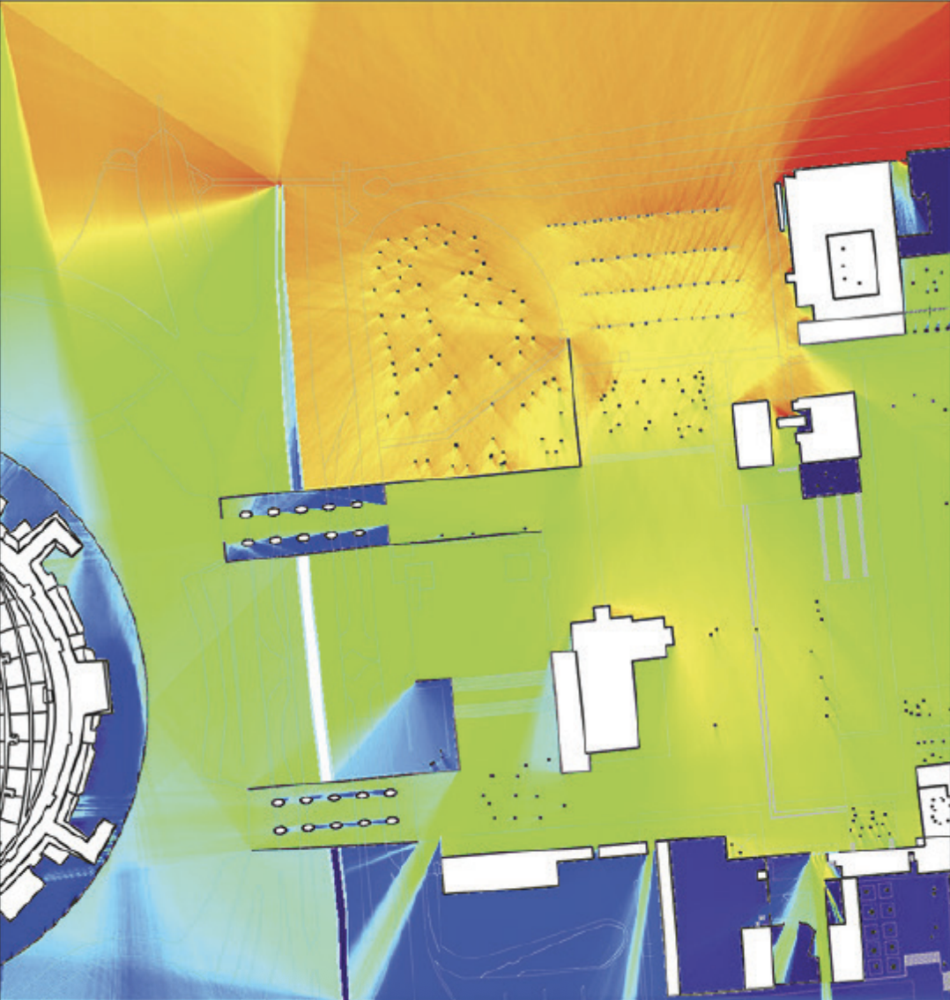

Ciudad Universitaria (CU), the central campus of the National Autonomous University of México, is a public institution of national importance in education, research, and cultural development. However, CU also plays a distinctive and recurring role in the political life of México. This essay explores it as a spatial culture, focusing specifically on how its physical configuration and institutional structure support the emergence of student-led social movements. Through space syntax theoryA theory of space and a set of analytical, quantitative and descriptive tools for analysing the layout of space in buildings and cities. It provides insights into both the social antecedents and consequences of spatial form. — Hillier & Hanson (1984), The Social Logic of Space, pp. 48–51. and relational spatial analysis, the argument presented here is that CU is not merely a backdrop to political action, but a space that actively shapes and amplifies it.
Designed in the post-revolutionary context of mid-20th century Mexico, CU combined modernist architecture with nationalist symbolism. Monumental murals—shaped by the Mexican muralist movement—were integrated to reinforce civic values and national identity (Mello, 2022). Inaugurated in 1954, CU exemplifies a spatial practice where design and institutional autonomy converge to support public mobilisation. Its open, interconnected layout, including Las Islas and the Rectoría esplanade, fosters co-presenceThe group of people who may not know each other, or even acknowledge each other, who appear in spaces that they share and use. The raw material for the creation of community. — Hillier (1996, 2007), Space is the Machine, p. 141. and visibility—conditions that make collective action not only possible but structurally predictable.

Unlike gated campuses, CU is legally autonomous and spatially porous, enabling student movements with limited external interference. Its open layout concentrates political energy and amplifies visibility: students from different faculties converge at shared nodes, encounter one another in circulation, and gather at symbolically loaded sites. Over time, this has made CU a recurring reference point for national unrest—a campus whose spatial form does not merely accommodate protest but makes it structurally more likely.
CU has hosted pivotal mobilisations at each major moment of political crisis: the 1968 protests against state repression, culminating in the Tlatelolco massacre when the military occupied the campus; the 2014 response to the Ayotzinapa disappearances, when students took over the Rectorate and Las Islas became a site to receive the victims' families; and the 2019–2020 feminist protests against sexual violence. Each event illustrates how CU functions as both symbolic stage and spatial infrastructure for dissent.
Hillier's three laws of spatial form and society (1989) explain why. The first law holds that spatial forms are shaped by the needs and values of the society that creates them: CU's open layout, central green spaces, and visual openness were designed to embody democratic access and intellectual exchange. The second law proposes that once created, spatial arrangements exert influence back on society by structuring movement, interaction, and visibility: in CU, these features actively enable co-presence and make mobilisation easier. The third law explains that over time, the relationship between space and society becomes embedded: the repeated use of CU as a site of protest has created expectations and traditions. The campus is now culturally understood as a space of political action—and that understanding itself reproduces the conditions for action.
Space syntax accounts for CU's configurational logic, but not for the meanings that accumulate within it. Doreen Massey's relational conception of space (2005) offers a complementary lens: space is not a neutral container but a product of social relationships, layered in time, and always in the process of being made.
Applied to CU, Massey's framework reveals three dimensions. First, places acquire meaning through use: Las Islas and the Rectoría esplanade carry political weight not because of their geometry alone, but because of what has happened in them—marches, occupations, vigils—repeated across decades. Second, space is the sphere of multiplicity: CU holds simultaneous, overlapping histories that coexist in murals, renamed buildings, and protest rituals. The 1968 movement, the Ayotzinapa solidarity, the feminist occupations of 2020 are not separate episodes but sedimentary layers that give the campus its political density. Third, space is always being produced (Massey, 2005): CU's influence does not stop at its boundaries. Marches that begin here move toward the city centre, extending the political energy of the campus into the urban fabric—making CU not just a host of movements, but an engine that shapes their geography.
What emerges from both frameworks is a coherent picture: CU is a space that has been designed to enable encounter, used to produce dissent, and charged with enough political memory that each new movement arrives to a campus that already knows what to do. Las Islas concentrates people because its geometry demands it. The Rectoría esplanade amplifies gatherings because its openness makes them visible. The campus boundary dissolves into the city not only legally but spatially—marches do not end at the gate. The argument is not that space determines politics, but that in CU, space and politics have become mutually constitutive: each protest reshapes the meaning of the campus, and the campus shapes the form each protest takes.
References
- Hillier, B. (1989) 'The Architecture of the Urban Object', Ekistics, 334–335, pp. 5–21.
- Hillier, B. and Hanson, J. (1984) The Social Logic of Space. 1st edn. Cambridge: Cambridge University Press.
- Hillier, B. (1996) Space is the Machine: A Configurational Theory of Architecture. Cambridge: Cambridge University Press. (Electronic edn., 2007.)
- Massey, D. (2005) For Space. London: SAGE Publications.
- Mello, R.G. (ed.) (2022) UNAM: 100 años de muralismo. Ciudad de México: UNAM, Dirección General de Comunicación Social.
- Lizárraga, S. and López, C. (eds.) (2014) Habitar CU 60 años. México: UNAM, pp. 140–141.
- Ortíz-Chao, C.G. (2020) 'Configuración espacial, vitalidad urbana y riesgo de robo: el caso de la Ciudad Universitaria de la UNAM', Academia XXII, 11(21), pp. 149–173. doi.
- Ortíz-Chao, C.G., Pereyra Flores, A. and Sandoval del Valle, N.S. (2024) 'Percepción de inseguridad y visibilidad en Ciudad Universitaria', Academia XXII, 15(30), pp. 215–243. doi.